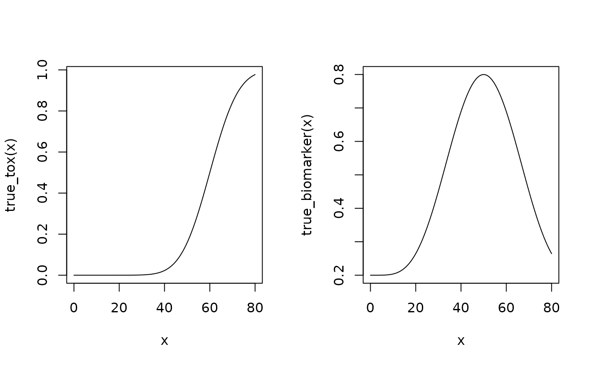

Show the summary of the dual-endpoint simulations
Source:R/Simulations-methods.R
show-DualSimulationsSummary-method.RdShow the summary of the dual-endpoint simulations
Arguments
- object
the
DualSimulationsSummaryobject we want to print
Examples
# Define the dose-grid.
emptydata <- DataDual(doseGrid = c(1, 3, 5, 10, 15, 20, 25, 30))
# Initialize the CRM model.
my_model <- DualEndpointRW(
mean = c(0, 1),
cov = matrix(c(1, 0, 0, 1), nrow = 2),
sigma2betaW = 0.01,
sigma2W = c(a = 0.1, b = 0.1),
rho = c(a = 1, b = 1),
rw1 = TRUE
)
# Choose the rule for selecting the next dose.
my_next_best <- NextBestDualEndpoint(
target = c(0.9, 1),
overdose = c(0.35, 1),
max_overdose_prob = 0.25
)
# Choose the rule for the cohort-size.
my_size1 <- CohortSizeRange(
intervals = c(0, 30),
cohort_size = c(1, 3)
)
my_size2 <- CohortSizeDLT(
dlt_intervals = c(0, 1),
cohort_size = c(1, 3)
)
my_size <- maxSize(my_size1, my_size2)
# Choose the rule for stopping.
my_stopping1 <- StoppingTargetBiomarker(
target = c(0.9, 1),
prob = 0.5
)
# Stop with a small number of patients for illustration.
my_stopping <- my_stopping1 | StoppingMinPatients(10) | StoppingMissingDose()
# Choose the rule for dose increments.
my_increments <- IncrementsRelative(
intervals = c(0, 20),
increments = c(1, 0.33)
)
# Initialize the design.
my_design <- DualDesign(
model = my_model,
data = emptydata,
nextBest = my_next_best,
stopping = my_stopping,
increments = my_increments,
cohortSize = CohortSizeConst(3),
startingDose = 3
)
# Define scenarios for the TRUE toxicity and efficacy profiles.
beta_mod <- function(dose, e0, eMax, delta1, delta2, scal) {
maxDens <- (delta1^delta1) * (delta2^delta2) / ((delta1 + delta2)^(delta1 + delta2))
dose <- dose / scal
e0 + eMax / maxDens * (dose^delta1) * (1 - dose)^delta2
}
true_biomarker <- function(dose) {
beta_mod(dose, e0 = 0.2, eMax = 0.6, delta1 = 5, delta2 = 5 * 0.5 / 0.5, scal = 100)
}
true_tox <- function(dose) {
pnorm((dose - 60) / 10)
}
# Draw the TRUE profiles.
par(mfrow = c(1, 2))
curve(true_tox(x), from = 0, to = 80)
curve(true_biomarker(x), from = 0, to = 80)

# Run the simulation on the desired design.
# For illustration purposes only 1 trial outcome is generated and 5 burn-ins
# to generate 20 samples are used here.
my_sims <- simulate(
object = my_design,
trueTox = true_tox,
trueBiomarker = true_biomarker,
sigma2W = 0.01,
rho = 0,
nsim = 1,
parallel = FALSE,
seed = 3,
startingDose = 6,
mcmcOptions = McmcOptions(
burnin = 5,
step = 1,
samples = 20
)
)
# Show the summary of the simulations.
show(summary(
my_sims,
trueTox = true_tox,
trueBiomarker = true_biomarker
))
#> Summary of 1 simulations
#>
#> Target toxicity interval was 20, 35 %
#> Target dose interval corresponding to this was NA, NA
#> Intervals are corresponding to 10 and 90 % quantiles
#>
#> Number of patients overall : mean 6 (6, 6)
#> Number of patients treated above target tox interval : mean 0 (0, 0)
#> Proportions of DLTs in the trials : mean 0 % (0 %, 0 %)
#> Mean toxicity risks for the patients on active : mean 0 % (0 %, 0 %)
#> Doses selected as MTD : mean 0 (0, 0)
#> True toxicity at doses selected : mean 0 % (0 %, 0 %)
#> Proportion of trials selecting target MTD: 0 %
#> Dose most often selected as MTD: 0
#> Observed toxicity rate at dose most often selected: NaN %
#> Fitted toxicity rate at dose most often selected : mean NA % (NA %, NA %)
#> Fitted biomarker level at dose most often selected : mean NA (NA, NA)